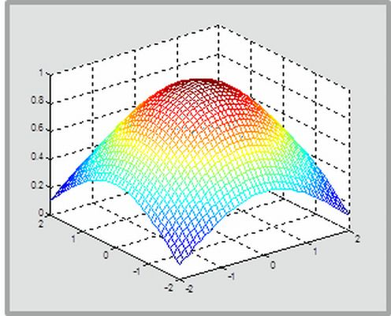

<menu><a href="introduction.html" target="main">Introduction</a></menu>
<menu><a href="installation.html" target="main">Installation</a></menu>
<menu><a href="dictprocedure.html" target="main">DICT Procedure</a>
<menu><a href="generatefilelist.html" target="main">Generate file list</a></menu>
<menu><a href="generategrid.html" target="main">Generate grid</a></menu>
<menu><a href="generatefilterlist.html" target="main">Generate filter list</a></menu>
<menu><a href="checkimagequality.html" target="main">Check image quality</a></menu>
<menu><a href="averageimagestack.html" target="main">Average image stack</a></menu>
<menu><a href="processcorrelations.html" target="main">Process correlations</a></menu>
<menu><a href="analyzeresults.html" target="main">Analyze results</a></menu>
<menu><a href="calibration.html" target="main">Create / apply calibration</a></menu>
<menu><a href="logging.html" target="main">Logging</a></menu>
<menu><a href="peaktracking.html" target="main">Peak tracking</a></menu></menu>
<menu><a href="matlabbasics.html" target="main">MATLAB Basics</a></menu>
<menu><a href="acknowledgements.html" target="main">Acknowledgements</a></menu>
<menu><a href="main.html" target="main">Contact</a></menu>